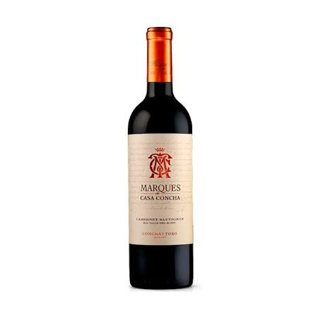
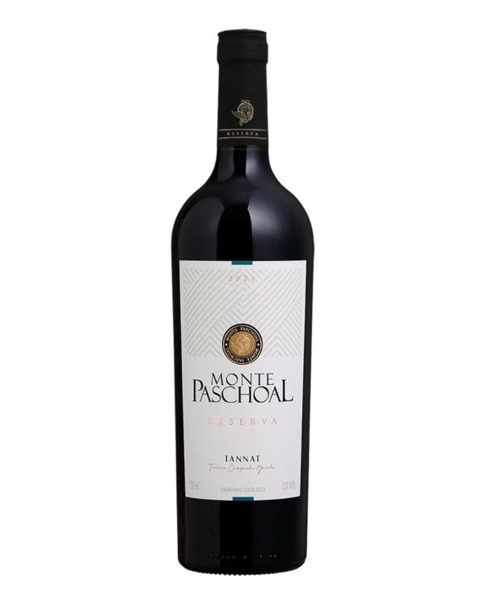
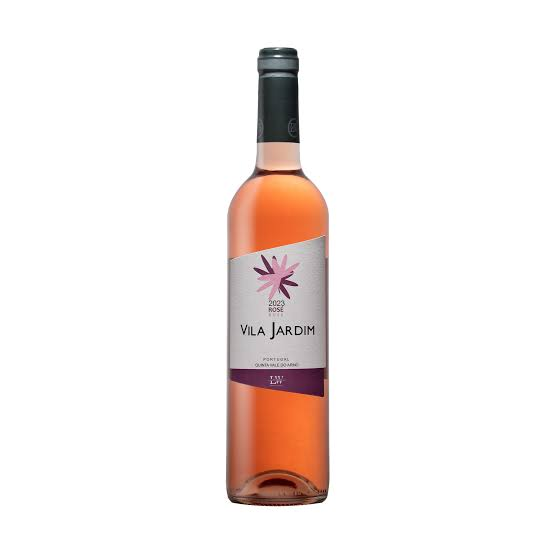
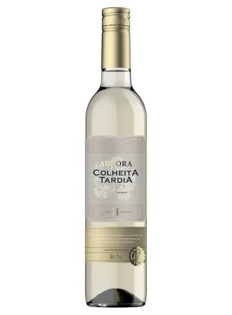

Tinto
Tinto
Angnello Cabernet
Notas de frutas maduras, especiarias e final aveludado.
R$ 89,90
Bem-vindo à Vinharia Angnello
Tinto
Notas de frutas maduras, especiarias e final aveludado.
R$ 89,90 Rosé
Rosé
Leve, fresco e delicado, perfeito para dias ensolarados.
R$ 74,90 Branco
Branco
Aromas cítricos e toque floral com acidez equilibrada.
R$ 79,90 Tinto
Tinto
Textura macia, frutas vermelhas e notas sutis de carvalho.
R$ 99,90
BrancoFresco e aromático, com notas de maracujá e ervas.
R$ 84,90 Espumante
Espumante
Perlage delicado e final refrescante para brindar.
R$ 109,90
TintoIntenso e estruturado, com taninos elegantes e persistentes.
R$ 119,90
RoséFrutas frescas, cor vibrante e um final muito agradável.
R$ 69,90
DoceDoçura equilibrada e aromas de frutas amarelas e suculentas.
R$ 94,90Tudo começou em 1978, quando Giovanni Angnello, filho de imigrantes italianos, comprou um pequeno terreno nas colinas do Vale do Rio das Pedras.
Ele trouxe consigo mudas de videiras herdadas do avô e o sonho de recriar, em solo brasileiro, os vinhos que sua família produzia há gerações na região da Toscana.
Os primeiros anos foram difíceis. O clima era diferente, a terra precisava de tempo para se adaptar, e muitas colheitas se perderam antes que a primeira garrafa fosse engarrafada.
Mas Giovanni não desistiu. Em 1985, a Vinícola Angnello lançou seu primeiro rótulo: um tinto encorpado que carregava o nome da família com orgulho.
Hoje, mais de quatro décadas depois, a vinícola é conduzida pela terceira geração da família, que uniu a tradição artesanal do bisavô às técnicas modernas de vinificação.
Cada garrafa que sai da nossa adega carrega essa história: a de uma família que atravessou oceanos para plantar raízes e transformar paixão em vinho.
Entre em contato para conhecer nossa seleção.
Email: contato@vinheriaagnello.com.br
Telefone: (11) 98765-4321